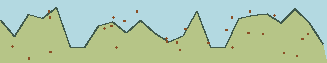

<meta charset=utf-8><title>Harbor survey and restoration</title><style>
* { box-sizing: border-box } body {margin:0;background:#e1e7eb;color:#17252d;font:18px/26px Georgia,serif}
header {position:sticky;top:0;z-index:2;background:#173b51;color:#fff;height:48px;padding:10px calc((100% - 660px)/2);white-space:nowrap;font:bold 19px system-ui}
article {width:700px;max-width:100%;margin:auto;background:#fdfcf7;padding:22px 24px}
h1 {font-size:42px;line-height:46px;margin:0 0 16px} h2 {font-size:23px;margin:24px 0 8px}
p {margin:0 0 14px} video {display:block;width:432px;height:264px;margin:0 auto;background:#111}
figure {margin:8px 0 18px} figcaption {margin:6px 0;color:#394950;text-align:center;font-size:15px}
aside {position:fixed;bottom:0;z-index:2;width:100%;height:56px;background:#e1c580;padding:14px;text-align:center;font:16px system-ui}
</style><header>HARBOR JOURNAL &nbsp; / &nbsp; Field reports</header><article><h1>How the harbor changed</h1>
<h2>1. Field report from station A</h2><p>The railway museum described a different approach before the first October storm. Visitors organized the notebooks in the sheltered valley. The local archive surveyed the route during a week of clear weather. Two surveyors organized the notebooks on the shaded side. The restoration team added new observations along the original canal.</p><p>The harbor committee compared older photographs after the last train departed. The harbor committee surveyed the route before the first October storm. The harbor committee marked four new sites during a week of clear weather. The restoration team traced the early maps on the shaded side.</p><figure><video src="motion.webm" autoplay muted loop playsinline></video><figcaption>Survey video · continuous field observations</figcaption></figure><h2>2. Field report from station B</h2><p>Two surveyors compared older photographs on the shaded side. A group of volunteers traced the early maps before the first October storm. Community gardeners marked four new sites in the sheltered valley. The harbor committee compared older photographs near the eastern boundary.</p><p>The local archive organized the notebooks at the west entrance. Two surveyors surveyed the route on the shaded side. The railway museum compared older photographs before the first October storm. Two surveyors traced the early maps along the original canal. Community gardeners traced the early maps near the eastern boundary. The local archive surveyed the route during a week of clear weather.</p><figure><figcaption>Survey map for station B</figcaption></figure><h2>3. Field report from station C</h2><p>The restoration team traced the early maps on the shaded side. The railway museum traced the early maps at the west entrance. Visitors added new observations after the last train departed. Two surveyors measured last year's changes during a week of clear weather. The local archive traced the early maps in the sheltered valley.</p><p>Community gardeners surveyed the route during a week of clear weather. Community gardeners marked four new sites before the first October storm. Visitors surveyed the route on the shaded side. The harbor committee compared older photographs before the first October storm. The local archive traced the early maps after the last train departed. The railway museum traced the early maps along the original canal.</p><h2>4. Field report from station D</h2><p>The harbor committee traced the early maps on the shaded side. The harbor committee marked four new sites in the sheltered valley. The railway museum described a different approach on the shaded side. Visitors measured last year's changes on the shaded side. Two surveyors traced the early maps before the first October storm. The restoration team added new observations at the west entrance.</p><p>A group of volunteers organized the notebooks after the last train departed. The railway museum surveyed the route after the last train departed. The local archive described a different approach on the shaded side. Two surveyors traced the early maps in the sheltered valley.</p><h2>5. Field report from station E</h2><p>Visitors described a different approach along the original canal. Community gardeners compared older photographs on the shaded side. Visitors traced the early maps during a week of clear weather. The railway museum marked four new sites at the west entrance. A group of volunteers added new observations at the west entrance.</p><p>The railway museum added new observations on the shaded side. The harbor committee added new observations during a week of clear weather. The local archive measured last year's changes on the shaded side. Two surveyors organized the notebooks near the eastern boundary. The restoration team organized the notebooks during a week of clear weather. A group of volunteers added new observations along the original canal.</p><figure><figcaption>Survey map for station E</figcaption></figure><h2>6. Field report from station F</h2><p>The harbor committee compared older photographs during a week of clear weather. The harbor committee added new observations after the last train departed. Two surveyors surveyed the route at the west entrance. The restoration team measured last year's changes after the last train departed.</p><p>Two surveyors described a different approach along the original canal. The railway museum marked four new sites along the original canal. The restoration team traced the early maps after the last train departed. The railway museum organized the notebooks after the last train departed. Visitors measured last year's changes in the sheltered valley. Community gardeners measured last year's changes at the west entrance.</p><h2>7. Field report from station G</h2><p>The local archive added new observations after the last train departed. Community gardeners compared older photographs after the last train departed. The railway museum marked four new sites in the sheltered valley. Two surveyors traced the early maps during a week of clear weather.</p><p>Two surveyors added new observations during a week of clear weather. The harbor committee marked four new sites in the sheltered valley. A group of volunteers measured last year's changes on the shaded side. Community gardeners surveyed the route along the original canal. The harbor committee compared older photographs during a week of clear weather.</p><h2>8. Field report from station H</h2><p>Two surveyors surveyed the route in the sheltered valley. Visitors compared older photographs before the first October storm. A group of volunteers marked four new sites in the sheltered valley. The harbor committee added new observations at the west entrance. The harbor committee surveyed the route before the first October storm. Two surveyors marked four new sites along the original canal.</p><p>The restoration team added new observations along the original canal. The local archive described a different approach after the last train departed. Community gardeners measured last year's changes on the shaded side. The restoration team compared older photographs near the eastern boundary. Two surveyors organized the notebooks near the eastern boundary.</p><figure><figcaption>Survey map for station H</figcaption></figure><h2>9. Field report from station I</h2><p>The harbor committee added new observations in the sheltered valley. Community gardeners surveyed the route along the original canal. Visitors organized the notebooks along the original canal. Visitors surveyed the route after the last train departed. Visitors marked four new sites at the west entrance.</p><p>The railway museum described a different approach on the shaded side. Visitors described a different approach near the eastern boundary. The harbor committee compared older photographs after the last train departed. Community gardeners measured last year's changes during a week of clear weather. A group of volunteers added new observations at the west entrance. The harbor committee measured last year's changes on the shaded side.</p><h2>10. Field report from station J</h2><p>The restoration team marked four new sites during a week of clear weather. The restoration team surveyed the route along the original canal. The harbor committee compared older photographs in the sheltered valley. Two surveyors organized the notebooks near the eastern boundary. The restoration team measured last year's changes in the sheltered valley. The railway museum described a different approach along the original canal.</p><p>The local archive organized the notebooks along the original canal. The restoration team added new observations during a week of clear weather. Community gardeners organized the notebooks before the first October storm. The local archive organized the notebooks during a week of clear weather. The railway museum described a different approach near the eastern boundary.</p><h2>11. Field report from station K</h2><p>Two surveyors traced the early maps along the original canal. The local archive organized the notebooks near the eastern boundary. A group of volunteers surveyed the route on the shaded side. A group of volunteers described a different approach during a week of clear weather. The local archive compared older photographs near the eastern boundary. The restoration team organized the notebooks on the shaded side.</p><p>The harbor committee traced the early maps after the last train departed. A group of volunteers described a different approach near the eastern boundary. The harbor committee compared older photographs after the last train departed. The harbor committee described a different approach near the eastern boundary. Two surveyors marked four new sites on the shaded side. The railway museum traced the early maps after the last train departed.</p><figure><figcaption>Survey map for station K</figcaption></figure><h2>12. Field report from station L</h2><p>A group of volunteers added new observations on the shaded side. Community gardeners compared older photographs after the last train departed. The railway museum marked four new sites at the west entrance. Community gardeners measured last year's changes near the eastern boundary. The railway museum measured last year's changes at the west entrance. Community gardeners surveyed the route on the shaded side.</p><p>Two surveyors traced the early maps on the shaded side. Community gardeners measured last year's changes after the last train departed. Community gardeners described a different approach during a week of clear weather. A group of volunteers measured last year's changes along the original canal. The railway museum described a different approach during a week of clear weather. Two surveyors added new observations at the west entrance.</p><h2>13. Field report from station M</h2><p>Visitors measured last year's changes along the original canal. The restoration team surveyed the route at the west entrance. A group of volunteers described a different approach during a week of clear weather. The restoration team organized the notebooks on the shaded side. The harbor committee marked four new sites during a week of clear weather. Two surveyors compared older photographs on the shaded side.</p><p>Visitors traced the early maps in the sheltered valley. Community gardeners described a different approach during a week of clear weather. The local archive surveyed the route near the eastern boundary. Community gardeners surveyed the route during a week of clear weather. Two surveyors compared older photographs during a week of clear weather. A group of volunteers marked four new sites at the west entrance.</p><h2>14. Field report from station N</h2><p>A group of volunteers surveyed the route at the west entrance. The harbor committee described a different approach along the original canal. The local archive compared older photographs in the sheltered valley. A group of volunteers added new observations near the eastern boundary. Two surveyors surveyed the route in the sheltered valley. The harbor committee compared older photographs before the first October storm.</p><p>The local archive organized the notebooks on the shaded side. Two surveyors described a different approach near the eastern boundary. Community gardeners compared older photographs on the shaded side. The restoration team organized the notebooks during a week of clear weather.</p><figure><figcaption>Survey map for station N</figcaption></figure><h2>15. Field report from station O</h2><p>A group of volunteers described a different approach at the west entrance. The railway museum marked four new sites during a week of clear weather. Community gardeners surveyed the route during a week of clear weather. The railway museum measured last year's changes at the west entrance.</p><p>Community gardeners measured last year's changes before the first October storm. The restoration team surveyed the route on the shaded side. Community gardeners added new observations on the shaded side. The local archive organized the notebooks at the west entrance. Community gardeners traced the early maps near the eastern boundary.</p><h2>16. Field report from station P</h2><p>The local archive measured last year's changes in the sheltered valley. Visitors added new observations along the original canal. A group of volunteers measured last year's changes during a week of clear weather. Visitors added new observations on the shaded side. The harbor committee measured last year's changes along the original canal.</p><p>Community gardeners marked four new sites at the west entrance. The harbor committee compared older photographs on the shaded side. The restoration team marked four new sites at the west entrance. Community gardeners compared older photographs at the west entrance. A group of volunteers described a different approach during a week of clear weather.</p></article><aside>Cookie notice · This test page uses no optional cookies</aside>